공조냉동기계산업기사 (2015-03-08 기출문제)
1과목: 공기조화
1. 여과기를 여과작용에 의해 분류할 때 해당되는 것이 아닌 것은?
- 충돌 점착식
- 자동 재생식
- 건성 여과식
- 활성탄 흡착식
(정답률: 72%)

2. 풍량 600m3/min, 정압 60mmAq, 회전수 500rpm의 특성을 갖는 송풍기의 회전수를 600rpm으로 증가하였을때 동력은? (단, 정압효율은 50%이다.)
- 약 12.1kW
- 약 18.2kW
- 약 20.3kW
- 약 24.5kW
(정답률: 45%)
3. 통과 풍량이 350m3/min일 때 표준 유닛형 에어필터의 수는 약 몇 개인인가? (단, 통과 풍속은 1.5m/s, 통과면적은 0.5m2이며, 유효면적은 85%이다.)
- 4개
- 6개
- 8개
- 10개
(정답률: 66%)
4. 가스난방에 있어서 총 손실열량이 300000kcal/h, 가스의 발열량이 6000kcal/m3, 가스소요량이 70m3/h일 때 가스 스토브의 효율은?
- 약 71%
- 역 80%
- 역 85%
- 약 90%
(정답률: 65%)
5. 제습장치에 대한 설명으로 틀린 것은?
- 냉각식 제습장치는 처리공기를 노점 온도 이하로 냉각시켜 수증기를 응축시킨다.
- 일반 공조에서는 공조기에 냉각코일을 채용하므로 별도의 제습장치가 없다.
- 제습방법은 냉각식, 압축식, 흡수식, 흡착식이 있으나 대부분 냉각식을 사용한다.
- 에어와셔방식은 냉각식으로 소형이고 수처리가 편리하여 많이 채용된다.
(정답률: 72%)
6. 온수보일러의 상당방열면적이 110m2일 때, 환산증발량은?
- 약 91.8kg/h
- 약 112.2kg/h
- 약 132.6kg/h
- 약 153.0kg/h
(정답률: 49%)
7. 지하상가의 공조방식을 결정 시 고려해야 할 내용으로 틀린 것은?
- 취기를 발하는 점포는 확산되지 않도록 한다.
- 각 점포마다 어느 정도의 온도조절을 할 수 있게 한다.
- 음식점에서는 배기가 필요하므로 풍량 밸런스를 고려하여 채용한다.
- 공공지하보도 부분과 점포부분은 동일 계통으로 한다.
(정답률: 87%)
8. 각 실마다 전기스토브나 기름난로 등을 설치하여 난방을 하는 방식은?
- 온돌난방
- 중앙난방
- 지역난방
- 개별난방
(정답률: 91%)
9. 공기조화 부하의 종류 중 실내부하와 장치부하에 해당 되지 않는 것은?
- 사무기기나 인체를 통해 실내에서 발생하는 열
- 외부의 고온 기류가 실내로 들어오는 열
- 덕트에서의 손실 열
- 펌프동력에서의 취득 열
(정답률: 68%)
10. 엔탈피 13.1kcal/kg인 300m3/h의 공기를 엔탈피 9kcal/kg의 공기로 냉각시킬 때 제거 열량은? (단, 공기의 밀도는 1.2kg/m3이다.)
- 1476kcal/h
- 1538kcal/h
- 1879kcal/h
- 1984kcal/h
(정답률: 49%)
11. 공조기 내에 흐르는 냉·온수 코일의 유량이 많아서 코일 내에 유속이 너무 클 때 적절한 코일은?
- 풀서킷(full circuit coil)
- 더블서킷 코일(double circuit coil)
- 하프서킷 코일(half circuit coil)
- 슬로서킷 코일(slow circuit coil)
(정답률: 85%)
12. 에어와셔에서 분무하는 냉수의 온도가 공기의 노점 온도보다 높을 경우 공기의 온도와 절대습도의 변화는?
- 온도는 올라가고, 절대습도는 증가한다.
- 온도는 올라가고, 절대습도는 감소한다.
- 온도는 내려가고, 절대습도는 증가한다.
- 온도는 내려가고, 절대습도는 감소한다.
(정답률: 66%)
13. 가습방식에 따른 방식 중 수분무식에 해당하는 것은?
- 회전식
- 원심식
- 모세관식
- 적하식
(정답률: 73%)
14. 공조장치의 공기 여과기에서 에어필터 효율의 측정법이 아닌 것은?
- 중량법
- 변색도법(비색법)
- 집진법
- DOP법
(정답률: 63%)
15. 보일러의 종류 중 원통보일러의 분류에 해당되지 않는 것은?
- 폐열 보일러
- 입형 보일러
- 노통 보일러
- 연관 보일러
(정답률: 84%)
16. 다음 수증기의 분압 표시로 옳은 것은? (단, Pw: 습공기 중의 수증기의 분압, Ps: 동일온도의 포화증기의 분압,
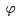
: 상대습도)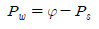
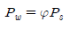
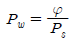
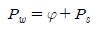
(정답률: 64%)
17. 축류 취출구로서 노즐을 분기덕트에 접속하여 급기를 취출하는 방식으로 구조가 간단하며 도달거리가 긴것은?
- 펑커루버
- 아네모스탯형
- 노즐형
- 팬형
(정답률: 68%)
18. 중앙에 냉동기를 설치하는 방식과 비교하여 덕트병용 패키지 공조방식에 대한 설명으로 틀린 것은?
- 기계실 공간이 적게 필요하다.
- 운전에 필요한 전문 기술자가 필요 없다.
- 설치비가 중앙식에 비해 적게 든다.
- 실내 설치 시 급기를 위한 덕트 샤프트가 필요하다.
(정답률: 67%)
19. 전공기 방식의 특징에 관한 설명으로 틀린 것은?
- 송풍량이 충분하므로 실내공기의 오염이 적다.
- 리턴 팬을 설치하면 외기냉방이 가능하다.
- 중앙집중식이므로 운전, 보수관리를 집중화할 수 있다.
- 큰 부하의 실에 대해서도 덕트가 작게 되어 설치공간이 적다.
(정답률: 80%)
20. 난방부하 계산 시 침입외기에 의한 열손실로 가장 거리가 먼 것은?
- 현열에 의한 열손실
- 잠열에 의한 열손실
- 클로 공간(crawl space)의 열손실
- 굴뚝효과에 의한 열손실
(정답률: 75%)
2과목: 냉동공학
21. 흡수식 냉동기의 특징에 대한 설명으로 틀린 것은?
- 부분 부하에 대한 대응성이 좋다.
- 용량제어의 범위가 넓어 폭넓은 용량제어가 가능하다.
- 초기 운전 시 정격 성능을 발휘할 때까지 도달 속도가 느리다.
- 압축식 냉동기에 비해 소음과 진동이 크다.
(정답률: 84%)
22. 감온식 팽창밸브의 작동에 영향을 미치는 것으로만 짝지어진 것은?
- 증발기의 압력, 스프링 압력, 흡입관의 압력
- 증발기의 압력, 응축기의 압력, 감온통의 압력
- 스프링 압력, 흡입관의 압력, 압축기 토출 압력
- 증발기의 압력, 스프링 압력, 감온통의 압력
(정답률: 74%)
23. 프레온 냉동기의 제어장치 중 가용전(fusible pluge)은 주로 어디에 설치하는가?
- 열교환기
- 증발기
- 수액기
- 팽창밸브
(정답률: 65%)
24. 어느 냉동기가 2HP의 동력을 소모하여 시간당 5⑤0kcal의 열을 저열원에서 제거한다면 이 냉동기의 성적계수는 약 얼마인가?
- 4
- 5
- 6
- 7
(정답률: 50%)
25. 물 10kg을 0℃로부터 100℃까지 가열하면 엔트로피의 증가는 얼마인가? (단, 물의 비열은 1kcal/kg·℃이다.)
- 2.18kcal/K
- 3.12kcal/K
- 4.32kcal/K
- 5.18kcal/K
(정답률: 56%)
26. 표준냉동사이클이 적용된 냉동기에 관한 설명으로 옳은 것은?
- 압축기 입구의 냉매 엔탈피와 출구의 냉매 엔탈피는 같다.
- 압축비가 커지면 압축기 출구의 냉매가스 토출 온도는 상승한다.
- 압축비가 커지면 체적 효율은 증가한다.
- 팽창밸브 입구에서 냉매의 과냉각도가 증가하면 냉동능력은 감소한다.
(정답률: 61%)
27. 냉동기의 성적계수가 6.84일 때 증발온도가 -13℃이다. 응축온도는?
- 약 15℃
- 약 20℃
- 약 25℃
- 약 30℃
(정답률: 56%)
28. 원심식 압축기의 특징이 아닌 것은?
- 체적식 압축기이다.
- 저압의 냉매를 사용하고 취급이 쉽다.
- 대용량에 적합하다.
- 서징현상이 발생할 수 있다.
(정답률: 56%)
29. 전자식 팽창밸브에 관한 설명으로 틀린 것은?
- 응축압력의 변화에 따른 영향을 직접적으로 받지 않는다.
- 온도식 팽창밸브에 비해 초기투자비용이 비싸고 내구성이 떨어진다.
- 일반적으로 슈퍼마켓, 쇼케이스 등과 같이 운전시간이 길고 부하변동이 비교적 큰 경우 사용하기 적합하다.
- 전자식 팽창밸브는 응축기의 냉매유량을 전자제어장치에 의해 조절하는 밸브이다.
(정답률: 50%)
30. 냉동사이클에서 등엔탈피 과정이 이루어지는 곳은?
- 압축기
- 증발기
- 수액기
- 팽창밸브
(정답률: 69%)
31. 팽창밸브를 너무 닫았을 때 일어나는 현상이 아닌 것은?
- 증발압력이 높아지고 증발기 온도가 상승한다.
- 압축기의 흡입가스가 과열된다.
- 능력당 소요동력이 증가한다.
- 압축기의 토출가스 온도가 높아진다.
(정답률: 54%)
32. 열펌프(heat pump)의 성적계수를 높이기 위한 방법으로 적당하지 못한 것은?
- 응축온도를 높인다.
- 증발온도를 높인다.
- 응축온도와 증발온도와의 차를 줄인다.
- 압축기 소요동력을 감소시킨다.
(정답률: 49%)
33. 브라인에 대한 설명으로 옳은 것은?
- 브라인 중에 용해하고 있는 산소량이 증가하면 부식이 심해진다.
- 구비조건으로 응고점은 높아야 한다.
- 유기질 브라인은 무기질에 비해 부식성이 크다.
- 염화칼슘용액, 식염수, 프로필렌글리콜은 무기질 브라인이다.
(정답률: 63%)
34. 응축온도는 일정한데 증발온도가 저하되었을 때 감소되지 않는 것은?
- 압축비
- 냉동능력
- 성적계수
- 냉동효과
(정답률: 72%)
35. 밀폐형 압축기에 대한 설명으로 옳은 것은?
- 회전수 변경이 불가능하다.
- 외부와 관통으로 누설이 발생한다.
- 전동기 이외의 구동원으로 작동이 가능하다.
- 구동방법에 따라 직결구동과 벨트구동 방법으로 구분한다.
(정답률: 68%)
36. 축열장치에서 축열재가 갖추어야 할 조건으로 가장 거리가 먼 것은?
- 열의 저장은 쉬워야 하나 열의 방출은 어려워야 한다.
- 취급하기 쉽고 가격이 저렴해야 한다.
- 화학적으로 안정해야 한다.
- 단위체적당 축열량이 많아야 한다.
(정답률: 85%)
37. 방열벽의 열전도도가 0.02kcal/m·h·℃이고, 두께가 10cm인 방열벽의 열통과율은? (단, 외벽, 내벽에서의 열전달률은 각각 20kcal/m2·h·℃, 8kcal/m2·h·℃이다.)
- 약 0.493kcal/m2·h·℃
- 약 0.393kcal/m2·h·℃
- 약 0.293kcal/m2·h·℃
- 약 0.193kcal/m2·h·℃
(정답률: 45%)
38. 압축기의 체적효율에 대한 설명으로 틀린 것은?
- 압축기의 압축비가 클수록 커진다.
- 틈새가 작을수록 커진다.
- 실제로 압축기에 흡입되는 냉매증기의 체적과 피스톤이 배출한 체적과의 비를 나타낸다.
- 비열비 값이 적을수록 적게 든다.
(정답률: 65%)
39. 냉동장치내의 불응축 가스에 관한 설명으로 옳은 것은?
- 불응축 가스가 많아지면 응축압력이 높아지고 냉동능력은 감소한다.
- 불응축 가스는 응축기에 잔류하므로 압축기의 토출가스온도에는 영향이 없다.
- 장치에 윤활유를 보충할 때 공기가 흡입되어도 윤활유에 용해되므로 불응축 가스는 생기지 않는다.
- 불응축 가스가 장치내에 침입해도 냉매와 혼합되므로 응축압력은 불변한다.
(정답률: 81%)
40. 다음 증발기의 종류 중 전열효과가 가장 좋은 것은? (단, 동일 용량의 증발기로 가정한다.)
- 플레이트형 증발기
- 팬 코일식 증발기
- 나관 코일식 증발기
- 쉘 튜브식 증발기
(정답률: 59%)
3과목: 배관일반
41. 이음쇠 중 방진, 방음의 역할을 하는 것은?
- 플렉시블형 이음쇠
- 슬리브형 이음쇠
- 스위블형 이음쇠
- 루프형 이음쇠
(정답률: 74%)
42. 다음 중 각 장치의 설치 및 특징에 대한 설명으로 틀린 것은?
- 슬루스 밸브는 유량조절용 보다는 개폐용(ON-OFF용)에 주로 사용된다.
- 슬루스 밸브는 일명 게이트 밸브라고도 한다.
- 스트레이너는 배관 속 먼지, 흙, 모래 등을 제거하기 위한 부속품이다.
- 스트레이너는 밸브 뒤에 설치한다.
(정답률: 79%)
43. 주철관의 이음방법이 아닌 것은?
- 소켓 이음(socket joint)
- 플레어 이음(flare joint)
- 플랜지 이음(flange joint)
- 노허브 이음(no-hub joint)
(정답률: 71%)
44. 비중이 약 2.7로서 열 및 전기 전도율이 좋으며 가볍고 전연성이 풍부하여 가공성이 좋고 순도가 높은 것은 내식성이 우수하여 건축재료 등에 주로 사용되는 것은?
- 주석관
- 강관
- 비닐관
- 알루미늄관
(정답률: 78%)
45. 급탕 배관 시공 시 배관 구배로 가장 적당한 것은?
- 강제순환식 : 1/100, 중력순환식 : 1/50
- 강제순환식 : 1/50, 중력순환식 : 1/100
- 강제순환식 : 1/100, 중력순환식 : 1/100
- 강제순환식 : 1/200, 중력순환식 : 1/150
(정답률: 73%)
46. 중앙식 급탕방법의 장점으로 옳은 것은?
- 배관길이가 짧아 열손실이 적다.
- 탕비장치가 대규모이므로 열효율이 좋다.
- 건물완성 후에도 급탕개소의 증설이 비교적 쉽다.
- 설비규모가 적기 때문에 초기 설비비가 적게 든다.
(정답률: 73%)
47. 진공 환수식 난방법에서 탱크 내 진공도가 필요 이상으로 높아지면 밸브를 열어 탱크 내에 공기를 넣는 안전밸브의 역할을 담당하는 기기는?
- 버큠 브레이커(vacuum breaker)
- 스팀 사일러서(steam silencer)
- 리프트 피팅(lift fitting)
- 냉각 레그(cooling leg)
(정답률: 72%)
48. 강판제 케이싱 속에 열전도성이 우수한 핀(fin)을 붙여 대류작용만으로 열을 이동시켜 난방하는 방열기는?
- 콘백터
- 길드 방열기
- 주형 방열기
- 벽걸이 방열기
(정답률: 76%)
49. 슬리브형 신축 이음쇠의 특징이 아닌 것은?
- 신축 흡수량이 크며, 신축으로 인한 응력이 생기지 않는다.
- 설치 공간이 루프형에 비해 크다.
- 곡선배관 부분이 있는 경우 비틀림이 생겨 파손의 원인이 된다.
- 장시간 사용 시 패킹의 마모로 인해 누설될 우려가 있다.
(정답률: 66%)
50. 수도 직결식 급수설비에서 수도본관에서 최상층 수전까지 높이가 10m일 때 수도본관의 최저 필요 수압은? (단, 수전의 최저 필요압력은 0.3kgf/cm2, 관내 마찰손실 수두는 0.2kgf/cm2으로 한다.)
- 1.0kgf/cm2
- 1.5kgf/cm2
- 2.0kgf/cm2
- 2.5kgf/cm2
(정답률: 66%)
51. 배관 회로의 환수방식에 있어서 역환수방식이 직접환수방식보다 우수한 점은?
- 순환펌프의 동력을 줄일 수 있다.
- 배관의 설치 공간을 줄일 수 있다.
- 유량을 균등하게 배분시킬 수 있다.
- 재료를 절약할 수 있다.
(정답률: 77%)
52. 배관 부속기기인 여과기(strainer)에 대한 설명으로 틀린 것은?
- 여과기의 종류에는 형상에 따라 Y형, U형, V형 등이 있다.
- 여과기의 설치 목적은 관 내 유체의 이물질을 제거하여 수량계, 펌프 등을 보호하는데 있다.
- U형 여과기는 유체의 흐름이 수평이므로 저항이 작아 주로 급수배관용에 사용한다.
- V형 여과기는 유체가 스트레이너 속을 직선적으로 흐르므로 Y형이나 U형에 비해 유속에 대한 저항이 적다.
(정답률: 67%)
53. 배관이나 밸브 등의 보온 시공한 부분의 서포트부에 설치되며 관의 자중 또는 열팽창에 의한 보온재의 파손을 방지하기 위해 사용하는 것은?
- 가이드(guide)
- 파이프 슈(pipe shoe)
- 브레이스(brace)
- 앵커(anchor)
(정답률: 69%)
54. 배수관에 설치하는 트랩에 관한 내용으로 틀린 것은?
- 트랩의 유효수심은 관내 압력 변동에 따라 다르나 일반적으로 최저 50mm가 필요하다.
- 트랩은 배수 시 자기세정이 가능해야 한다.
- 트랩의 봉수파괴 원인은 사이폰 작용, 흡출작용, 봉수의 증발 등이 있다.
- 트랩의 봉수 깊이는 가능한 한 깊게 하여 봉수가 유실되는 것을 방지한다.
(정답률: 75%)
55. 가스설비 배관 시 관의 지름은 폴(pole)식을 사용하여 구한다. 이때 고려할 사항이 아닌 것은?
- 가스의 유량
- 관의 길이
- 가스의 비중
- 가스의 온도
(정답률: 60%)
56. 냉동배관 재료로서 갖추어야 할 조건으로 틀린 것은?
- 저온에서 강도가 커야 한다.
- 내식성이 커야 한다.
- 관내 마찰저항이 커야 한다.
- 가공 및 시공성이 좋아야 한다.
(정답률: 81%)
57. 특수 통기 방식 중 배구 수직관에 선회력을 주어 공기코어를 형성하여 통기관 역할을 하는 것은?
- 소벤트 방식(sovent system)
- 섹스티어 방식(sextia system)
- 스택 벤트 방식(stack vent system)
- 에어 챔버 방식(air chamber system)
(정답률: 76%)
58. 공기조화설비에서 덕트 주요 요소인 가이드 베인에 대한 설명으로 옳은 것은?
- 소형 덕트의 풍량 조절용이다.
- 대형 덕트의 풍량 조절용이다.
- 덕트 분기 부분의 풍량 조절을 한다.
- 덕트 밴드부에서 기류를 안정시킨다.
(정답률: 71%)
59. 배관에서 보온재 선택 시 고려할 사항으로 가장 거리가 먼 것은?
- 안전 사용 온도 범위
- 열전도율
- 내용연수
- 운반비용
(정답률: 83%)
60. 급수설비에서 급수펌프 설치 시 캐비테이션(cavitation) 방지책에 대한 설명으로 틀린 것은?
- 펌프의 회전수를 빠르게 한다.
- 흡입배관은 굽힘부를 적게 한다.
- 단흡입 펌프를 양흡입 펌프로 바꾼다.
- 흡입관경은 크게 하고 흡입 양정을 짧게 한다.
(정답률: 74%)
4과목: 전기제어공학
61. 100V의 기전력으로 100J의 일을 할 때 전기량은 몇C인가?
- 0.1
- 1
- 10
- 100
(정답률: 75%)
62. 파형률이 가장 큰 것은?
- 구형파
- 삼각파
- 정현파
- 포물선파
(정답률: 67%)
63. R-L-C 직렬회로에서 전류가 최대로 되는 조건은?
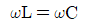
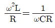
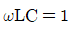
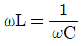
(정답률: 71%)
64. 배리스터의 주된 용도는?
- 서지전압에 대한 회로 보효용
- 온도 측정용
- 출력전류 조절용
- 전압 증폭용
(정답률: 77%)
65. 동작신호를 조작량으로 변환하는 요소로서 조절부와 조작부로 이루어진 요소는?
- 기준입력 요소
- 동작신호 요소
- 제어 요소
- 피드백 요소
(정답률: 72%)
66. 목푯값이 시간에 대하여 변화하지 않는 제어로 정전압장치나 일정 속도제어 등에 해당하는 제어는?
- 프로그램제어
- 추종제어
- 정치제어
- 비율제어
(정답률: 73%)
67. 다음의 신호흐름선도의 입력이 5일 때 출력이 3이 되기 위한 A의 값은?
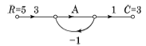
- 1/2
- 1/3
- 1/4
- 1/5
(정답률: 57%)
68. 변압기의 정격용량은 2차 출력단자에서 얻어지는 어떤 전력으로 표시하는가?
- 피상전력
- 유효전력
- 무효전력
- 최대전력
(정답률: 62%)
69. Lsh는 어떤 기능인가?
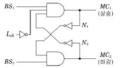
- 인터록
- 상승정지(상부에서)
- 기동입력
- 하강정지(하부에서)
(정답률: 67%)
70. 100V, 10A, 전기자저항 1Ω, 회전수 1800rpm인 직류 전동기의 역기전력은 몇 V인가?
- 80
- 90
- 100
- 110
(정답률: 58%)
71. 전압계에 대한 설명으로 틀린 것은?
- 동작원리는 전류계와 같다.
- 회로에 직렬로 접속한다.
- 내부저항이 있다.
- 가동코일형은 직류측정에 사용한다.
(정답률: 67%)
72. 다음 블록선도 중 비례적분제어기를 나타낸 블록선도는?
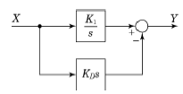
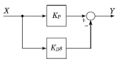
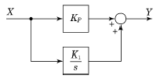
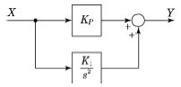
(정답률: 66%)
73. 제벡 효과(Seebeck effect)를 이용한 센서에 해당하는 것은?
- 저항 변화용
- 인덕턴스 변화용
- 용량 변화용
- 전압 변화용
(정답률: 71%)
74. 1차 자연요소의 전달함수는?
- s/K
- Ks
- 1/K
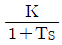
(정답률: 68%)
75. 전기력선의 성질로 틀린 것은?
- 양전하에서 나와 음전하로 끝나는 연속곡선이다.
- 전기력선상의 접선은 그 점에 있어서의 전계의 방향이다.
- 전기력선은 서로 교차한다.
- 단위 전계강도 1V/m인 점에 있어서 전기력선 밀도를 1개/m2라 한다.
(정답률: 75%)
76. 다음 중 프로세스 제어에 속하는 것은?
- 장력
- 압력
- 전압
- 저항
(정답률: 61%)
77. 진리표의 논리식과 같지 않은 것은?
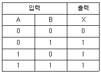
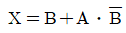
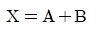
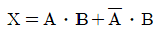
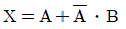
(정답률: 59%)
78. 직류 회로에서 일정 전압에 저항을 접속하고 전류를 흘릴 때 25%의 전류값을 증가시키고자 한다. 이때 저항을 몇 배로 하면 되는가?
- 0.25
- 0.8
- 1.6
- 2.5
(정답률: 55%)
79. 직류전동기는 속도제어를 비교적 간단하게 할 수 있고 기동 토크가 크므로 엘리베이터나 전차 등에 많이 사용되고 있다. 직류전동기에 가해지는 전압을 제어하여 속도제어로 많이 사용되는 방법은?
- 전압제어방식
- 계자저항제어방식
- 1단속도제어방식
- 워드-레오너드방식
(정답률: 69%)
80. 그림은 제어회로의 일부이다. 회로의 설명이 틀린 것은?
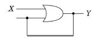
- 자기유지회로이다.
- 논리식은 Y=X+Y이다.
- X가 “1”이면, 항상 Y는 “1”이다.
- Y가 “1”인 상태에서 X가 0이면, Y는 0이 되는 회로이다.
(정답률: 69%)